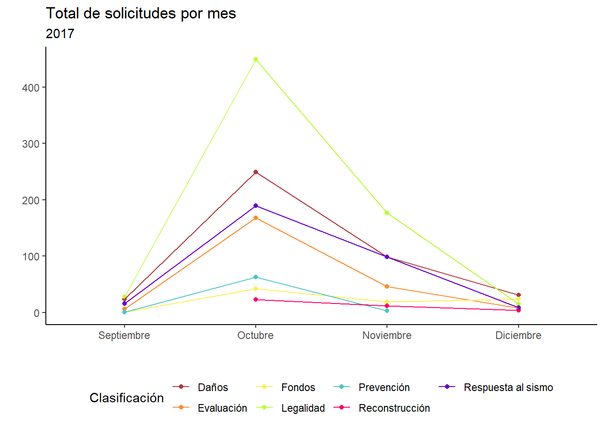

Breve análisis de las solicitudes de información pública relacionadas con el sismo del 19S de 2017
code
text-analysis
visualization
public information
spanish
Author
David Humberto Jiménez S.
Published
September 24, 2020
Modified
November 24, 2023
Holi…
¡Bienvenidas! Dejé esto abandonado por algún tiempo, la pandemia me dejo todo revuelto y apenas he retomado muchas de las actividades que mantenían mi cordura. Ahora, quiero escribir sobre algo que hice en el trabajo, y un par de trucos para empezar a usar purrr::map() y facilitarse la vida con tareas repetitivas.
Actualmente, trabajo en el Instituto de Transparencia, Acceso a la Información Pública, Protección de Datos Personales y Rendición de Cuentas de la Ciudad de México (INFO CDMX). Una de mis tareas es procesar datos estadísticos de las solicitudes, y a principios de este mes (septiembre) se realizó el 2° Coloquio Internacional por una reconstrucción abierta en la CDMX en donde se abrieron datos sobre solicitudes referentes al sismo del 19 de septiembre de 2017.
Entonces, vamos a utilizar las bases de datos disponibles. Van a la sección de multimedia y van a descargar el archivo zip que dice repositorio y lo van a descomprimir. Como es un archivo zip, no deberían tener ningún problema, si no pueden descargar winrar (esto no es un comercial, pero me parece el más útil).
En el archivo van a encontrar:
Un archivo con todas las solicitudes.
Tres archivos con las solicitudes por año. Es decir, un archivo con todas las solicitudes de 2017, 2018 y 2019.
Tres carpetas con los archivos individuales por año. En este caso, cada carpeta tiene los archivos de las dependencias e instituciones que recibieron solicitudes. Por ejemplo, Delegación Benito Juárez-2017.xlsx.
El origen de estos datos es de las solicitudes de información realizadas durante el periodo registrado, así como la integración de la información por los sujetos obligados (nombre para las instituciones que reciben y ejercen recursos públicos de manera sistemática, desde secretarías hasta sindicatos). Entonces, además de poder observar los textos de las solicitudes, podemos acceder a algunos datos socio demográficos. Y ahora sí, con el código :D
Libraries o paquetes
library(dplyr)
Attaching package: 'dplyr'
The following objects are masked from 'package:stats':
filter, lag
The following objects are masked from 'package:base':
intersect, setdiff, setequal, union
library(purrr)
Warning: package 'purrr' was built under R version 4.2.3
library(scales)
Attaching package: 'scales'
The following object is masked from 'package:purrr':
discard
library(readxl)library(stringr)
Warning: package 'stringr' was built under R version 4.2.3
library(ggplot2)library(lubridate)
Attaching package: 'lubridate'
The following objects are masked from 'package:base':
date, intersect, setdiff, union
Como siempre, lo primero es “llamar” los paquetes. Y luego, definir los “directorios”, es decir las carpetas donde tenemos los archivos que vamos a trabajar. Por eso es muy importante que tengan orden en sus carpetas, sino puede ser muy complicado trabajar.
Intenté hacerlo con setwd(), que es la manera base, pero la verdad era demasiado escribir y copiar. Si quieren intentarlo tendrían que poner algo así: setwd(“/Users/equipo/carpeta/Bases de SIP sobre reconstrucción en la CDMX”).
Pero yo, como siempre, haré que mis directorios sean objetos de r:
input <-"D:/dhumb/Documents/projects/data_blog/Bases de SIP sobre reconstrucción en la CDMX"list.files(input)
[1] "2017"
[2] "2017 final.xlsx"
[3] "2018"
[4] "2018 final.xlsx"
[5] "2019"
[6] "2019 final.xlsx"
[7] "2020.09.03_Nota-Criterios de_Bases SIP-Reconstrucción 2017-2019.docx"
[8] "Bases de SIP sobre reconstrucción en la CDMX.rar"
[9] "Reconstruccion consolidada.xlsx"
Puse un punto “.” porque para publicar esto r siempre me pone un directorio default, entonces el punto significa lo mismo que copiar este directorio. Y quiero que exploremos esta manera de utilizar directorios.
Ahora, podemos hacer varias cosas: dado que en la carpeta que descomprimimos viene un único archivo con todas las solicitudes de información, obviamente sería más fácil trabajar así. Pero, no aprenderíamos a trabajar con múltiples archivos al mismo tiempo.
Entonces, vamos a utilizar las carpetas con los archivos individuales. De este modo, podríamos “leer” cada archivo de manera individual de la siguiente manera:
[1] "Delegación Álvaro Obregón-2017.xlsx"
[2] "Delegación Azcapotzalco-2017.xlsx"
[3] "Delegación Benito Juárez-2017.xlsx"
[4] "Delegación Coyoacán-2017.xlsx"
[5] "Delegación Cuajimalpa de Morelos-2017.xlsx"
[6] "Delegación Cuauhtémoc-2017.xlsx"
[7] "Delegación Gustavo A. Madero-2017.xlsx"
[8] "Delegación Iztacalco-2017.xlsx"
[9] "Delegación Iztapalapa-2017.xlsx"
[10] "Delegación La Magdalena Contreras-2017.xlsx"
[11] "Delegación Miguel Hidalgo-2017.xlsx"
[12] "Delegación Milpa Alta-2017.xlsx"
[13] "Delegación Tláhuac-2017.xlsx"
[14] "Delegación Tlalpan-2017.xlsx"
[15] "Delegación Venustiano Carranza-2017.xlsx"
[16] "Delegación Xochimilco-2017.xlsx"
[17] "Instituto de Vivienda del Distrito Federal-2017.xlsx"
[18] "Instituto Local de la Infraestructura Física Educativa del Distrito Federal-2017.xlsx"
[19] "Instituto para la Seguridad de las Construcciones en el Distrito Federal-2017.xlsx"
[20] "Jefatura de Gobierno del Distrito Federal-2017.xlsx"
[21] "Secretaría de Desarrollo Urbano y Vivienda-2017.xlsx"
[22] "Secretaría de Educación-2017.xlsx"
[23] "Secretaría de Obras y Servicios-2017.xlsx"
Lo primero que podemos notar es que son 23 archivos para el año 2017… Entonces, cargar cada archivo, sabiendo que tienen la misma estructura, es poco eficiente, especialmente si pensamos que todavía nos faltan los datos de 2018 y 2019.
list.files(paste(input, "2018", sep ="/"))
[1] "Comisión para la Reconstrucción-2018.xlsx"
[2] "Comisión para la Reconstrucción, Recuperación y Transformación de la Ciudad de México, en una CDMX cada vez más resiliente-2018.xlsx"
[3] "Delegación Álvaro Obregón-2018.xlsx"
[4] "Delegación Azcapotzalco-2018.xlsx"
[5] "Delegación Benito Juárez-2018.xlsx"
[6] "Delegación Coyoacán-2018.xlsx"
[7] "Delegación Cuajimalpa de Morelos-2018.xlsx"
[8] "Delegación Cuauhtémoc-2018.xlsx"
[9] "Delegación Gustavo A. Madero-2018.xlsx"
[10] "Delegación Iztacalco-2018.xlsx"
[11] "Delegación Iztapalapa-2018.xlsx"
[12] "Delegación La Magdalena Contreras-2018.xlsx"
[13] "Delegación Miguel Hidalgo-2018.xlsx"
[14] "Delegación Milpa Alta-2018.xlsx"
[15] "Delegación Tláhuac-2018.xlsx"
[16] "Delegación Tlalpan-2018.xlsx"
[17] "Delegación Venustiano Carranza-2018.xlsx"
[18] "Delegación Xochimilco-2018.xlsx"
[19] "Instituto de Vivienda del Distrito Federal-2018.xlsx"
[20] "Instituto Local de la Infraestructura Física Educativa del Distrito Federal-2018.xlsx"
[21] "Instituto para la Seguridad de las Construcciones en el Distrito Federal-2018.xlsx"
[22] "Jefatura de Gobierno del Distrito Federal-2018.xlsx"
[23] "Secretaría de Desarrollo Urbano y Vivienda-2018.xlsx"
[24] "Secretaría de Educación-2018.xlsx"
[25] "Secretaría de Obras y Servicios-2018.xlsx"
list.files(paste(input, "2019", sep ="/"))
[1] "Alcaldía Álvaro Obregón-2019.xlsx"
[2] "Alcaldía Azcapotzalco-2019.xlsx"
[3] "Alcaldía Benito Juárez-2019.xlsx"
[4] "Alcaldía Coyoacán-2019.xlsx"
[5] "Alcaldía Cuajimalpa de Morelos-2019.xlsx"
[6] "Alcaldía Cuauhtémoc-2019.xlsx"
[7] "Alcaldía Gustavo A. Madero-2019.xlsx"
[8] "Alcaldía Iztacalco-2019.xlsx"
[9] "Alcaldía Iztapalapa-2019.xlsx"
[10] "Alcaldía La Magdalena Contreras-2019.xlsx"
[11] "Alcaldía Miguel Hidalgo-2019.xlsx"
[12] "Alcaldía Milpa Alta-2019.xlsx"
[13] "Alcaldía Tláhuac-2019.xlsx"
[14] "Alcaldía Tlalpan-2019.xlsx"
[15] "Alcaldía Venustiano Carranza-2019.xlsx"
[16] "Alcaldía Xochimilco-2019.xlsx"
[17] "Comisión para la Reconstrucción-2019.xlsx"
[18] "Comisión para la Reconstrucción, Recuperación y Transformación de la Ciudad de México, en una CDMX cada vez más resiliente-2019.xlsx"
[19] "Instituto de Vivienda de la Ciudad de México-2019.xlsx"
[20] "Instituto Local de la Infraestructura Física Educativa de la Ciudad de México-2019.xlsx"
[21] "Instituto para la Seguridad de las Construcciones en la Ciudad de México-2019.xlsx"
[22] "Jefatura de Gobierno de la Ciudad de México-2019.xlsx"
[23] "Secretaría de Administración y Finanzas-2019.xlsx"
[24] "Secretaría de Desarrollo Urbano y Vivienda-2019.xlsx"
[25] "Secretaría de Educación, Ciencia, Tecnología e Innovación-2019.xlsx"
[26] "Secretaría de Gestión Integral de Riesgos y Protección Civil-2019.xlsx"
[27] "Secretaría de Inclusión y Bienestar Social-2019.xlsx"
[28] "Secretaría de Obras y Servicios-2019.xlsx"
Parece intimidante, ¿no? Leer 74 archivos para empezar a trabajar… Pero para eso tenemos purrr.
purrr::map()
Este paquete nos permite realizar tareas de Functional programming una palabra elegante para decir realizar tareas repetitivas de manera más rápida y eficiente. Pueden consultar la documentación aquí.
Con este código ya abrimos los 23 archivos de excel :D
Pero, aún no podemos usarlos como base de datos :(
Esto se debe a que map es una función especial de purrr. Ya vimos lo que hace, pero no sabemos por qué.
map nos permite aplicar una función a todos los elementos de una lista o vector que nosotros le proporcionemos. En este caso, utilicé list.files para crear un objeto llamado primer.
Luego, le decimos que función queremos que aplique. Como queremos que learchivos en formato xlsx (exceles), le ponemos read_excel. Y aquí vamos a repasar todo. Esta función tiene un montón de parámetros para leer exceles. Pero por ahora nos importa uno: donde está el archivo path = . Aquí utilicé una función paste que sirve para pegar strings lo que nos permite abrir los archivos de Excel.
input, como mencioné, es la carpeta con todos los datos descomprimidos.
2017 es la carpeta del año con los archivos individuales
.x es un argumento de la función map es el i-esímo objeto al que le aplicaremos la función. Como espero hayas notado, primer es el objeto con la lista de archivos excel dentro de la carpeta, por eso necesito el paste para que vaya cambiando. En otras palabras, el .x es la variable que irá cambiando hasta que termine de leer los archivos.
Ahora lo que queremos es poder utilizar los datos como siempre, en un data frame.
primer_f <-bind_rows(primer_e)dim(primer_f)
[1] 2541 40
Como sabemos que todo tiene la misma estructura, podemos combinar los archivos por renglones. Estamos pegando un archivo debajo de otro, debajo de otro y así, siempre y cuando tengan los mismos encabezados. Esto último es fundamental porque bind_rows es un función de dplyr y si no tienen los mismos encabezados y dimensiones no podríamos hacerlo. No es como su “primo” cbind de r base, que solo necesita que tenga el mismo número de columnas y lo une como esté. A veces la utilizaremos, pero necesitamos estar seguras de cómo y cuándo.
En el caso de 2018, les va a salir un error, y es que el nombre del primer archivo es exageradamente largo: “Comisión para la Reconstrucción, Recuperación y Transformación de la Ciudad de México, en una CDMX cada vez más resiliente-2018.xlsx” por eso hay que cambiarlo a mano en nuestra carpeta. A map no le importa los nombres de los archivos, pero sí la longitud de los strings. Si creen que el nombre es demasiado largo, tal vez tengan razón. Porque lo mismo pasa para el 2019: “Comisión para la Reconstrucción, Recuperación y Transformación de la Ciudad de México, en una CDMX cada vez más resiliente-2019.xlsx”
Y todas tienen 40 columnas, entonces, el siguiente paso es más fácil. Ahora tenemos 3 archivos, uno correspondiente a cada año. Pero, generalmente, es más fácil tener todo dentro de una sola base de datos.
data <-bind_rows(primer_f, segundo_f, tercer_f)dim(data)
[1] 7499 40
Gráficas
Ahora tenemos una base de datos con 6,819 renglones y 40 columnas. Y con esto podemos ponernos a hacer algunas gráficas.
Pero, hay un pequeño, pequeñísimo problema… Los nombres de las columnas.
names(data)
[1] "No."
[2] "Sujeto_N"
[3] "Sujeto"
[4] "Organo_N"
[5] "Clave"
[6] "Propio"
[7] "( A )\r\n\r\nFolio"
[8] "( B )\r\n\r\nFecha de presentación de la solicitud\r\n\r\ndd/mm/aaaa"
[9] "( C )\r\n\r\nMedio por el que se presentó la solicitud"
[10] "( D )\r\n\r\nInformación objeto de la solicitud \r\n\r\n(PROTEGER EN TODO MOMENTO LOS DATOS PERSONALES)"
[11] "( E )\r\n\r\nN° de preguntas que comprende la solicitud"
[12] "( F )\r\n\r\nTemática de la información requerida"
[13] "( F_1 )\r\n\r\nÁrea de interés del Solictante"
[14] "( G )\r\n\r\nLa información solicitada fue de oficio"
[15] "( H )\r\n\r\nEstado en que se encontraba la solicitud"
[16] "prevencion_solicitante"
[17] "( I_1 )\r\n\r\nFecha en la que el solicitante atendió la prevención"
[18] "( I_2 )\r\n\r\n¿La solicitud de información pública fue prevenida total o parcialmente?"
[19] "( I_3 )\r\n\r\nNúmero de preguntas fueron prevenidas"
[20] "( J )\r\n\r\n¿Se notificó al solicitante ampliación de plazo para entregar la información?"
[21] "( K )\r\n\r\nModalidad de repuesta"
[22] "( L_1 ) \r\n\r\nTotal de Entes públicos a los que se turnó la solicitud"
[23] "( L_2 ) \r\n\r\nEnte Público al \r\nque se turnó la solicitud"
[24] "( M )\r\n\r\n¿Se entregó o se envió por algún medio la información al solicitante?"
[25] "( N )\r\n\r\nPara la entrega de información, ¿se le requirió al solicitante algún monto por concepto de reproducción?"
[26] "( O )\r\n\r\nMonto total requerido por concepto de reproducción"
[27] "( P )\r\n\r\nMedio por el que se puso a disposición la información solicitada"
[28] "( Q )\r\n\r\nFecha en que se notificó la respuesta o se turnó la solicitud\r\n\r\ndd/mm/aaaa"
[29] "( R )\r\n\r\nMedio por el que se notificó la respuesta"
[30] "( S )\r\n\r\nDías HÁBILES transcurridos entre la recepción de la solicitud y la notificación de respuesta"
[31] "( T )\r\n\r\nNo. de Servidores Públicos directamente involucrados en la respuesta de la solicitud"
[32] "( U )\r\n\r\nSexo del solicitante"
[33] "( V )\r\n\r\nEdad del solicitante"
[34] "( W )\r\n\r\nOcupación del solicitante"
[35] "( X )\r\n\r\nEscolaridad del solicitante"
[36] "( Y )\r\n\r\nEstado de la República Mexicana o país que corresponde a la dirección que registró el solicitante"
[37] "( Z )\r\n\r\nObservaciones"
[38] "mes"
[39] "year"
[40] "clasificacion"
Aquí, sí se ven las diagonales inversas, si lo abren en excel verán que está en varios renglones, pero esto es muy difícil de trabajar en r. Para solucionar esto, vamos a cambiarle los nombres a todas las variables.
Puse cada nombre en un reglón y un espacio cada 5 nombres, para no perderme, si se saben otra manera avísenme :P
Además de cambiarle el nombre, vamos a utilizar la forma en que se procesan los datos: cambiar categorías, agrupar, crear nuevas variables, etc. Esto lo voy a hacer porque estoy familiarizado con este procesamiento. Creo que el código es autoexplicativo, pero si tienen alguna duda mandenme un DM en twitter.
data <- data %>%mutate(semana =week(fecha_presentacion)) %>%group_by(year, Sujeto_N, semana) %>%distinct(Informacion_objeto, .keep_all = T) %>%ungroup() %>%mutate(clasificacion =str_replace_all( clasificacion,c("daños"="Daños", "evaluacion"="Evaluación","fondos"="Fondos", "legalidad"="Legalidad","prevencion"="Prevención", "reconstruccion"="Reconstrucción","respuesta al sismo"="Respuesta al sismo" ) ),Tematica_solicitud =ifelse(str_detect(Tematica_solicitud, "Otros") == T,"Otros",ifelse(Tematica_solicitud =="Datos Personales","Otros", Tematica_solicitud ) ),modalidad_respuesta_2 =ifelse(str_detect(modalidad_respuesta, "Aceptada") == T,"Aceptada",ifelse(str_detect(modalidad_respuesta, "restringido") == T,"Acceso restringido", modalidad_respuesta ) ),edad =as.numeric(edad),grupo_edad =ifelse(edad <=19, "Hasta 19 años",ifelse(edad >19& edad <30, "De 20 a 29 años",ifelse(edad >=30& edad <40, "De 30 a 39 años",ifelse(edad >=40& edad <50, "De 40 a 49 años",ifelse(edad >=50& edad <60, "De 50 a 59 años",ifelse(edad >=60& edad <70, "De 60 a 69 años",ifelse(edad >=70, "70 o mas años", edad) ) ) ) ) ) ),grupo_edad =factor(grupo_edad, levels =c("Hasta 19 años", "De 20 a 29 años", "De 30 a 39 años","De 40 a 49 años", "De 50 a 59 años", "De 60 a 69 años","70 o mas años" )),escolaridad =str_replace_all(escolaridad, c("Bachillerato o carrera técnica"="Bachillerato","Bachillerato"="Bachillerato o carrera técnica","Maestría o Doctorado"="Maestría o doctorado" )),ocupacion =str_replace_all(ocupacion, c("Otros - Amas de Casa"="Hogar","Otros - Organizaciones No Gubernamentales Internacionales"="ONG","Otros - Organizaciones No Gubernamentales Nacionales"="ONG","Otros - Asociación política"="Asociación política","Servidor Público"="Servicio público","Otros - Comerciante"="Comercio","Otros - Empleado u obrero"="Empleada/o u obrera/o","Empleado u obrero"="Empleada/o u obrera/o" )),ocupacion =ifelse(str_detect(ocupacion, "Académico") == T, "Académico o estudiante",ifelse(str_detect(ocupacion, "Empresarial") == T, "Empresa",ifelse(str_detect(ocupacion, "Gubernamental") == T, "Servicio público",ifelse(str_detect(ocupacion, "omunicación") == T, "Medios de comunicación",ifelse(str_detect(ocupacion, "Otro") == T, "Otro", ocupacion) ) ) ) ),Organo_N =str_replace_all(Organo_N, c("1"="Administración Pública Central","2"="Desconcentrados y Paraestales","3"="Alcaldías","4"="Judicial","5"="Legislativo","6"="Autónomo","7"="Partidos Políticos","8"="Sindicatos" )),Preguntas_solicitud =as.numeric(Preguntas_solicitud),preguntas_prevenidas =as.numeric(preguntas_prevenidas),total_entes_turnados =as.numeric(total_entes_turnados),info_entregada_2 =ifelse(str_detect(info_entregada, "No"), "No",ifelse(str_detect(info_entregada, "Si"),"S?", info_entregada ) ),dias_transcurridos_recepcion_notificacion =as.numeric(dias_transcurridos_recepcion_notificacion),Servidores_publicos_involucrados =as.numeric(Servidores_publicos_involucrados),sexo =str_replace_all(sexo, c("Femenino"="Mujeres", "Masculino"="Hombres")) )
Warning: There was 1 warning in `mutate()`.
ℹ In argument: `preguntas_prevenidas = as.numeric(preguntas_prevenidas)`.
Caused by warning:
! NAs introduced by coercion
dim(data)
[1] 5168 44
Lo que me gustaría enfatizar son las primeras 5 líneas de código. Yo revise esta base de datos y sé que hay muchas solicitudes repetidas. Pero, no puedo descartarlas solo por el hecho de estar repetidas. Quizás una persona estuvo realizando la misma solicitud sistemáticamente cada semana, o quizás a una persona se le fue el internet al terminar y realizó exactamente la misma solicitud. Por esa razón, y siguiendo los criterios del Natalia Torres y Guillermo Cejudo para que solo se quede una solicitud con el mismo texto a la semana. Es decir, si es idéntico el texto de dos solicitudes con folio diferentes, y se presentó en la misma semana, solo se contará la más antigua.
colores <-c("Daños"="#ae3a3d", "Evaluación"="#fc8d33","Fondos"="#faef59", "Legalidad"="#bcfa3d","Prevención"="#4fc6c4", "Reconstrucción"="#FF0066","Respuesta al sismo"="#6600cc")
Códigos de colores para que todas las gráficas estén uniformes.
data %>%group_by(year) %>%mutate(tyear =n()) %>%group_by(year, clasificacion, tyear) %>%summarise(tclas =n()) %>%ungroup() %>%mutate(porc = tclas / tyear) %>%ggplot(aes(x = year, y = porc, fill = clasificacion)) +geom_bar(position ="dodge", stat ="identity") +scale_y_continuous(labels =percent_format()) +scale_fill_manual(values = colores) +theme(legend.position ="bottom") +theme_classic() +labs(title ="Solicitudes por tema",subtitle ="Dividido por año",x ="", y ="", fill ="Clasificación",caption ="Incluye personas que no proporcionaron información sociodemográfica.\nTotal de observaciones = 5,168" )
`summarise()` has grouped output by 'year', 'clasificacion'. You can override
using the `.groups` argument.
Ahora, aquí vemos que las solicitudes se concentran en un par de clasificaciones y R lo ajusta al tamaño de la pantalla. Pero acabo de leer un librito que les recomiendo mucho How charts lie: Getting Smarter about Visual Information sobre como entender mejor las gráficas y diseñarlas. En este sentido, quiero ver como se ve cuando el límite es 100%
data %>%group_by(year) %>%mutate(tyear =n()) %>%group_by(year, clasificacion, tyear) %>%summarise(tclas =n()) %>%ungroup() %>%mutate(porc = tclas / tyear) %>%ggplot(aes(x = year, y = porc, fill = clasificacion)) +geom_bar(position ="dodge", stat ="identity") +ylim(0, 1) +scale_fill_manual(values = colores) +theme(legend.position ="bottom") +theme_classic() +labs(title ="Solicitudes por tema",subtitle ="Dividido por año",x ="", y ="", fill ="Clasificación",caption ="Incluye personas que no proporcionaron información sociodemográfica.\nTotal de observaciones = 5,168" )
`summarise()` has grouped output by 'year', 'clasificacion'. You can override
using the `.groups` argument.
Aquí ya no pude poner el eje “y” como me hubiera gustado, pero la idea es muliplicar la leyenda por 100 para convertirlo en porcentaje.
Podemos darnos cuenta de que poniendo como límite el 100 pierde todo el impacto la gráfica. Por lo que dejarla acotada hasta el 40% nos da una mejor visión para comparar entre categorías. Jugar con las gráficas siempre nos da perspectiva.
data %>%filter(!is.na(sexo)) %>%mutate(cont =1) %>%group_by(sexo, year) %>%mutate(tsex =sum(cont, na.rm = T)) %>%group_by(sexo, year, clasificacion, tsex) %>%summarise(tclas =n()) %>%ungroup() %>%mutate(porc = tclas / tsex) %>%ggplot(aes(x = sexo, y = porc, fill = clasificacion)) +geom_bar(position ="dodge", stat ="identity") +scale_fill_manual(values = colores) +scale_y_continuous(labels =percent_format()) +coord_flip() +facet_grid(. ~ year) +theme(legend.position ="bottom") +theme_classic() +labs(title ="Solicitudes por tema y sexo",subtitle ="Dividido por año",x ="", y ="", fill ="Clasificación",caption ="Solo se consideran solicitudes con información sobre el sexo de la persona solicitante\nTotal de observaciones = 3,715" )
`summarise()` has grouped output by 'sexo', 'year', 'clasificacion'. You can
override using the `.groups` argument.
Algo que me parece fundamental es que solo el 71.9% de las solicitudes pusieron información sobre el sexo de la persona solicitante. Y de estas solicitudes, el 70.98% fueron realizadas por personas que se identifican como hombres.
Por último, vamos a ver el comportamiento de las solicitudes por mes de los años en cuestión.
data %>%mutate(mes =month(fecha_presentacion) ) %>%group_by(year, mes, clasificacion) %>%summarise(total =n()) %>%filter(year ==2017) %>%ungroup() %>%ggplot(aes(x =as.factor(mes), y = total, group = clasificacion)) +geom_point(aes(color = clasificacion)) +geom_line(aes(color = clasificacion)) +scale_color_manual(name ="Clasificación",values = colores ) +scale_x_discrete(labels =c("Septiembre", "Octubre", "Noviembre", "Diciembre")) +labs(title ="Total de solicitudes por mes",subtitle ="2017",x ="", y ="" ) +theme_classic() +theme(legend.position ="bottom")
`summarise()` has grouped output by 'year', 'mes'. You can override using the
`.groups` argument.

De esta gráfica lo más interesante es que en septiembre casi no hay solicitudes registradas, lo cual es bastante obvio porque estabaos en medio de una emergencia. Además, en todas estas gráficas utilizo números absolutos. El mes con más registros es octubre de 2017. En los años siguientes el pico nunca es tan alto.
`summarise()` has grouped output by 'year', 'mes'. You can override using the
`.groups` argument.
Con estas gráficas podemos empezar a plantear preguntas más interesantes. Además, es un esfuerzo institucional. Al igual que todos los datos, necesitamos más contexto para poder realizar preguntas más interesantes. Hay más categorías en estas bases de datos, como ocupación, días hábiles en los que se dio respuesta, número de servidores públicos involucrados, etc. En lo que aprendo mejor text mining una primera aproximación es ver estas gráficas.